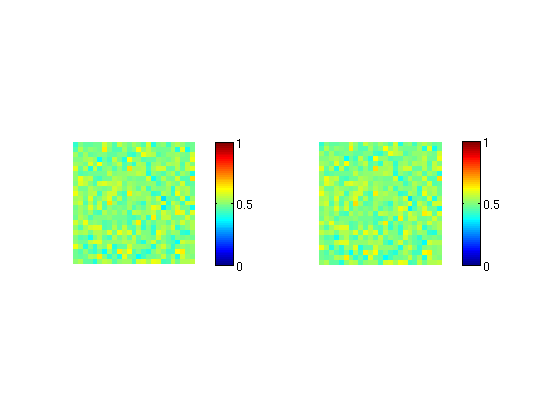
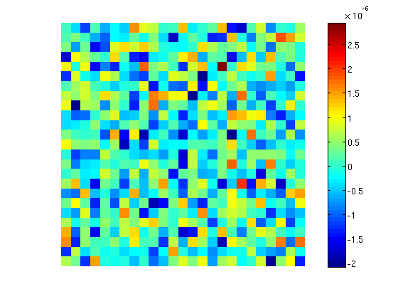

Manipulating Multi-Image TIFFs
Imaging software often stores data as multi-image tiffs. These files are easy to handle.
Creating a multi-image tiff. Note that this is an 8 bit tiff and so you may loose precision if you do this.
imageStack=rand(25,25,30); %Generate some data in the range of zero to one save3Dtiff(imageStack,'test.tiff') %Save as an 16-bit tiff ls -lh *.tiff
-rw-r--r-- 1 rob rob 43K Jun 18 14:32 test.tiff
Check we have written 30 frames
tiffFrames('test.tiff')
ans =
30
Obtaining the mean image without loading all frames simultaneously.
subplot(1,2,1) mu=meanFromTif('test.tiff'); mu=double(mu)/2^16; %Normalise 16 bit values imagesc(mu), set(gca,'clim',[0,1]), axis square off colorbar subplot(1,2,2) imagesc(mean(imageStack,3)), set(gca,'clim',[0,1]), axis square off colorbar
Loading the tiff: the procedure has produced small rounding errors (note the scale on the colorbar).
clf im=double(load3Dtiff('test.tiff'))/2^16; imagesc(mean(im,3)-mean(imageStack,3)) colorbar axis equal off